이 보고서는 Kaggle의 4개 데이터셋 — Santander Customer Satisfaction(이진 분류), Credit Card Fraud Detection(불균형 이진 분류), Opiniosis Opinion / Review(비지도 텍스트 군집화), Mercari Price Suggestion(회귀) — 에 대해 각각 모델을 학습하고 검증한 결과를 정리한다. 담당 모델은 순서대로 RandomForest, LightGBM, TF-IDF + K-means, LinearRegression이며, 다른 팀원의 모델 결과는 비교 대상으로만 사용한다.
Santander에서는 극단적으로 불균형한 타깃(불만족 고객 비율 3.96%)을 다뤘다. 정확도(accuracy)는 이 조건에서 의미가 없으므로 ROC-AUC와 재현율(recall)을 핵심 지표로 채택했다. RandomForest는 임곗값(threshold) 0.05에서 재현율 0.6952를 얻어, 불만족 고객 10명 중 약 7명을 사전에 찾아낼 수 있는 수준을 확보했다.
Credit Card Fraud Detection에서는 사기 비율이 0.173%에 불과해 언더샘플링·SMOTE·SMOTE-ENN 세 가지 샘플링 기법을 동일한 LightGBM 기본 파라미터로 고정해 순수한 효과만 공정하게 비교했다(LightGBM은 비교 도구일 뿐 최종 채택 모델은 아니다). SMOTE를 공통 전처리로 채택한 뒤 5개 모델을 비교한 결과 RandomForest가 ROC-AUC 0.9854로 가장 우수했고, 여기에 임곗값을 0.727(최대 F1)에서 0.305로 낮춰 재현율을 0.7347→0.8367로 끌어올렸다. 정밀도는 0.9558→0.7500으로 낮아졌지만, 사기를 놓쳤을 때의 금전 손실이 오탐지 비용보다 훨씬 크다고 판단해 재현율을 우선했다.
Opiniosis에서는 벡터화(TF-IDF, Count) × 군집화(K-means, DBSCAN) 조합 5가지를 비교했다. Count 벡터 + K-means(k=3)가 실루엣 점수 0.5489로 가장 뚜렷하게 분리됐으며, 군집은 전자기기· 자동차·호텔 3개 상품군과 거의 정확히 일치했다. 추가로 TruncatedSVD 적용 여부를 대리 정답 기반 외부 평가(ARI/NMI)로 검증한 결과, 이 데이터셋(문서 51개)에서는 차원 축소가 필수가 아니라는 결론을 얻었다.
Mercari Price Suggestion에서는 약 148만 건의 상품에 대해 가격을 예측했다. LinearRegression은 RMSLE 0.4818을 기록했으며, 이는 실제 가격이 $20인 상품을 약 $12.4~$32.3 범위로 예측한다는 의미다(§5.6.3 참고). 팀 내 비교에서는 정규화가 적용된 Ridge(RMSLE 0.4791)와 LightGBM (RMSLE 0.4562, 팀원 기록)이 더 낮은 오차를 보였으며, 그 이유를 고차원 희소 피처에서의 정규화·비선형성 차이로 분석했다(§5.6.4).
실무에서 데이터 기반 의사결정은 모델을 "돌리는" 단계보다 결과 지표를 올바르게 해석하는 단계에서 더 자주 실패한다. accuracy가 96%라는 숫자만 보고 좋은 모델이라 판단하면, Santander처럼 불만족 고객이 3.96%뿐인 데이터에서는 모든 고객을 "만족"으로만 찍어도 96% accuracy가 나온다는 함정을 놓치게 된다. 이 보고서는 이러한 함정을 피하기 위해, 데이터셋마다 비즈니스 목적에 맞는 지표를 먼저 선정하고, 그 지표가 실제로 무엇을 의미하는지 구체적인 사례로 풀어 설명하는 것을 원칙으로 삼는다.
분석 대상은 성격이 서로 다른 4개 문제다. Santander와 Credit Card는 이진 분류이지만 불균형 정도가 다르고(3.96% vs 0.173%), Opiniosis는 정답 레이블이 없는 비지도 군집화이며, Mercari는 대규모 텍스트·범주형 피처를 다루는 회귀다. 문제 유형이 다르면 적합한 평가 지표와 전처리 전략도 달라지므로, 각 프로젝트를 독립된 장(章)으로 다루되 동일한 서술 구조(개요 → 지표 선정 → 전처리 → 모델링 → 결과 해석)를 적용해 비교 가능성을 유지했다.
은행 고객의 익명화된 거래·잔고 피처 369개로 고객 만족 여부(TARGET)를 예측하는 이진 분류 문제다. TARGET=1은 불만족 고객을 뜻하며, 은행 입장에서는 이탈 위험이 있는 고객을 미리 찾아내는 것이 목적이다. 담당 모델은 RandomForestClassifier다.
피처는 모두 익명화되어 ind_*(지표/플래그), num_*(건수), imp_*(금액), saldo_*(잔고), delta_*(변화량) 형태의 접두어와, ult1/ult3(최근 1개월/3개월), hace2/hace3(2·3기 이전) 같은 접미어 조합으로 이름 붙어 있다. 컬럼명만으로 의미를 알 수는 없지만, 이름 패턴 자체가 동일 지표를 여러 시점에 반복 수집한 시계열형 피처라는 구조를 보여준다. 이는 뒤에서 분산 0인 컬럼과 완전 중복 컬럼이 다수 발견되는 이유와도 연결된다 — 특정 시점 조합에서는 값이 전혀 변하지 않는 파생 지표가 반복 생성됐을 가능성이 높다.
cust_df.isna().sum() 기준 결측치는 0건이다. 다만 describe()의 최솟값(min) 행을 확인한 결과 var3의 최솟값이 -999999로 나타났다. 이는 실제 관측값이 아니라 결측을 특정 상수로 치환해 둔 placeholder로 판단하며(§2.3에서 처리), 이런 값이 있는 이상 "결측치 0건"이라는 표면적 결과만으로 데이터가 깨끗하다고 볼 수 없다.
분산이 0인 컬럼 34개를 발견했다. 모든 행이 같은 값을 가지므로 모델 학습에 아무 정보를 주지 못한다. 예: ind_var2_0, num_var27_0, saldo_var28 등.
값이 완전히 동일한 중복 컬럼 29개를 자체 함수(지문 비교 후 배열 비교)로 탐지했다. 예: ind_var29와 ind_var29_0, num_var18 계열 등.
총 63개 컬럼(분산0 34개 + 중복 29개)을 제거해도 정보 손실이 없다 — 값이 아예 없거나(분산0) 다른 컬럼이 이미 동일한 값을 갖고 있기(중복) 때문이다.
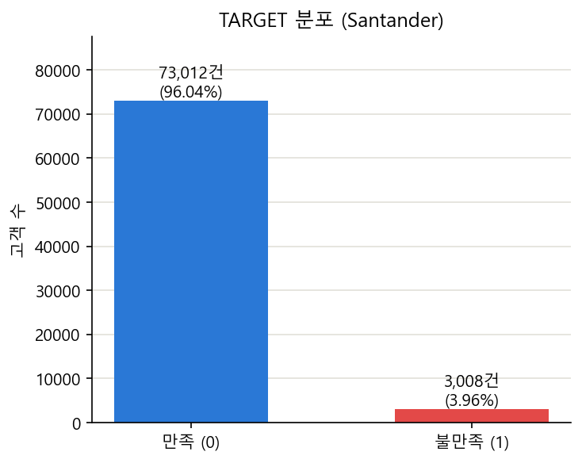
| 지표 | 정의 | 이 데이터에서의 역할 |
|---|---|---|
| ROC-AUC | 모든 임곗값에서 TPR-FPR 트레이드오프를 종합한 값 | 임곗값에 의존하지 않는 모델 자체의 판별력 비교 기준 |
| Recall(재현율) | 실제 불만족 고객 중 모델이 찾아낸 비율 | 이탈 위험 고객을 놓치지 않는 것이 핵심이므로 채택 |
| Precision(정밀도) | 불만족으로 예측한 고객 중 실제 불만족 비율 | 재현율과의 트레이드오프 확인용 보조 지표 |
| Accuracy | 전체 중 맞춘 비율 | 96:4 불균형에서 신뢰할 수 없는 지표 — 참고용으로만 병기 |
RandomForest는 확률 예측값(predict_proba)을 제공하므로, 기본 임곗값(0.5) 대신 Binarizer로 여러 임곗값(0.01~0.39)을 스캔해 재현율·정밀도·F1의 변화를 관찰하고, 실무적으로 타당한 지점을 선택하는 방식을 계획했다.
세 단계로 진행했다. 각 단계 이후 피처 shape 변화를 함께 기록해 손실 없는 축소임을 확인했다.
| 단계 | 처리 내용 | 피처 shape |
|---|---|---|
| 원본 | ID·TARGET 포함 전체 컬럼 | (76020, 371) |
| 1 | var3: -999999 → 2 치환, ID 컬럼 제거 | (76020, 369) |
| 2 | 분산 0인 컬럼 34개 제거 | (76020, 335) |
| 3 | 완전 중복 컬럼 29개 제거 → 최종 학습 피처 | (76020, 306) |
cust_df["var3"] = cust_df["var3"].replace(-999999, 2)
cust_df.drop("ID", axis=1, inplace=True)
# 분산 0 컬럼: stds = X_features.std(); zero_var_cols = stds[stds==0].index
# 완전 중복 컬럼: (sum,min,max) 지문으로 후보를 좁힌 뒤 배열 값 비교
var3의 -999999는 중앙값이나 평균이 아니라 2로 치환했다. var3 값 대부분이 작은 정수(국가/지역 코드로 추정)로 몰려 있어, 별도 결측 플래그 없이도 다수값 근처의 값으로 옮기는 것이 트리 기반 모델의 분기(split)를 왜곡하지 않는 실용적 선택이다.
본 파이프라인에서는 var38(왜도 51.27의 우편향 금액 변수)의 로그 변환이나 var15(추정 연령) 구간화 같은 추가 파생 피처를 만들지 않았다. total_result.xlsx 비교에서도 이 부분이 "X"로 표시돼 있다(§2.6.4 팀원 비교 참고).
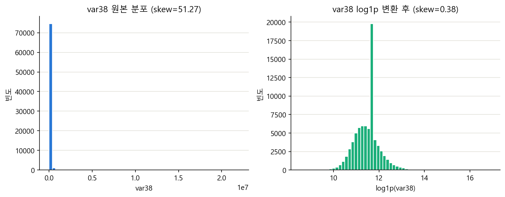
코드에 남아 있는 실행 기록을 단계별로 정리하면, 전처리 단계마다 RF(기본 파라미터) 성능이 다음과 같이 바뀌었다.
| 적용 전처리 | Accuracy | ROC-AUC |
|---|---|---|
| 전처리 없음(원본) | 0.9571 | 0.7795 |
| var3 치환 + ID 제거만 | 0.9521 | 0.7508 |
| + 분산 0 컬럼 제거 | 0.9526 | 0.7513 |
| 분산 0 컬럼 제거만(var3 미치환) | 0.9568 | 0.7800 |
| 분산 0 제거 + 중복 컬럼 제거 | 0.9569 | 0.7838 |
params = {
'n_estimators': [500],
'max_depth': [28, 32, 40],
'min_samples_split': [22, 26, 30]
}
grid_cv = GridSearchCV(rf_clf, param_grid=params, scoring='roc_auc', cv=2, n_jobs=-1)
grid_cv.fit(X_train, y_train)
# 최적 하이퍼 파라미터: {'max_depth': 28, 'min_samples_split': 30, 'n_estimators': 500}
# 최고 AUC(2-fold CV): 0.8208
탐색 범위는 이전 회차 결과를 반영해 좁혀왔다 — 1차 탐색 AUC 0.8119에서 시작해 max_depth를 16→28로, min_samples_split을 8→22~30 구간으로 점차 옮기며 4차에 걸쳐 AUC를 0.8130 → 0.8171 → 0.8217 수준까지 끌어올렸다. max_depth를 키울수록(트리를 더 깊게 허용할수록), min_samples_split을 함께 키워 과적합을 억제하는 조합이 이 데이터에서 가장 잘 맞았다.
| 임곗값 | 정확도 | 정밀도 | 재현율 | F1 | ROC-AUC |
|---|---|---|---|---|---|
| 0.01 | 0.3891 | 0.0595 | 0.9654 | 0.1120 | 0.8293 |
| 0.05 (채택) | 0.8074 | 0.1333 | 0.6952 | 0.2238 | 0.8293 |
| 0.10 | 0.8764 | 0.1646 | 0.5140 | 0.2493 | 0.8293 |
| 0.20 | 0.9419 | 0.2172 | 0.1746 | 0.1936 | 0.8293 |
| 0.39 | 0.9600 | 0.4000 | 0.0033 | 0.0065 | 0.8293 |
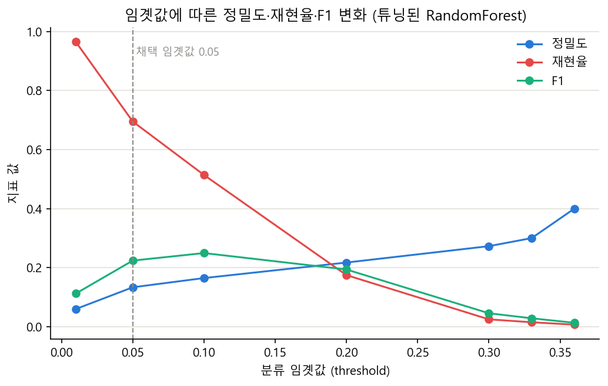
반대로 임곗값을 0.39까지 높이면 정밀도는 0.40으로 오르지만 재현율은 0.0033까지 떨어진다 — 즉 이탈 위험 고객 607명 중 단 2명만 찾아낸다. 기본 임곗값(0.5)에 가까운 이 영역에서 모델을 그대로 쓰면, ROC-AUC가 0.8293으로 나쁘지 않음에도 실무적으로는 "아무것도 하지 않는 모델"과 다를 바 없다. ROC-AUC가 높다고 해서 기본 임곗값이 적절하다는 뜻은 아니라는 것이 이 데이터가 주는 가장 중요한 교훈이다.
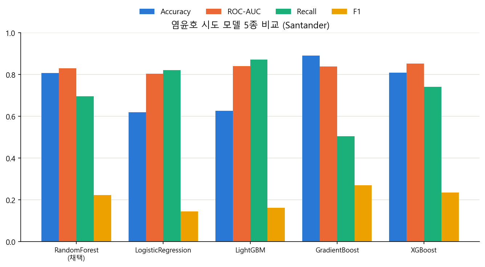
| 모델 | Accuracy | ROC-AUC | Recall | F1 | 비고 |
|---|---|---|---|---|---|
| RandomForest (채택) | 0.8074 | 0.8293 | 0.6952 | 0.2238 | 임곗값 0.05 |
| LogisticRegression | 0.6191 | 0.8032 | 0.8206 | 0.1457 | - |
| LightGBM | 0.6267 | 0.8408 | 0.8722 | 0.1631 | - |
| GradientBoost | 0.8909 | 0.8386 | 0.5041 | 0.2695 | 임곗값 0.1 |
| XGBoost | 0.8086 | 0.8520 | 0.7409 | 0.2346 | 임곗값 0.05 |
28개의 PCA(주성분분석) 변환 변수(V1~V28)와 거래 시각(Time), 거래 금액(Amount)으로 사기 거래 여부(Class)를 예측하는 이진 분류 문제다. 담당 모델은 RandomForest + SMOTE이며, 임곗값(threshold)을 재현율 중심으로 조정한 것이 최종 채택안이다. 이 과정에서 언더샘플링·SMOTE·SMOTE-ENN 세 샘플링 기법의 순수한 효과를 LightGBM 기본 파라미터로 고정해 비교하는 사전 실험도 함께 진행했다(§3.6.4).
| # | 컬럼명 | 설명 | 타입 |
|---|---|---|---|
| 1 | Time | 데이터셋 내 첫 거래 이후 경과 시간(초). 관측 구간은 총 48시간(172,792초) | Numeric |
| 2~29 | V1 ~ V28 | 원본 거래 정보를 PCA로 변환한 28개의 익명 연속형 변수 | Numeric(PCA) |
| 30 | Amount | 거래 금액(달러). $0 ~ $25,691.16 | Numeric |
| — | Class | 예측 대상. 0=정상 거래, 1=사기 거래 | Target(Binary) |
card_df.info() 기준 전체 31개 컬럼 모두 결측 없이 float64(30개)·int64(1개, Class)로 채워져 있다.
| 구분 | 변수 | 표준편차 |
|---|---|---|
| 상위 5개 (설명력 큰 축) | V1 | 1.9587 |
| V2 | 1.6513 | |
| V3 | 1.5163 | |
| V4 | 1.4159 | |
| V5 | 1.3802 | |
| 하위 5개 (설명력 작은 축) | V24 | 0.6056 |
| V25 | 0.5213 | |
| V26 | 0.4822 | |
| V27 | 0.4036 | |
| V28 | 0.3301 |
PCA는 주성분을 설명 분산이 큰 순서대로 V1, V2, …로 정렬해서 반환한다. V1의 표준편차(1.96)가 V28(0.33)의 약 6배인 것은 우연이 아니라 PCA의 정의 자체에서 비롯된 구조다. 이 성질은 §3.4에서 별도의 스케일링 없이도 트리 기반 모델을 바로 적용할 수 있는 이유와 연결된다.
평균($88.35)이 중앙값($22.00)보다 4배 가까이 크다는 것은 소액 거래가 대부분이고 극소수의 고액 거래가 평균을 끌어올리는 오른쪽으로 긴 꼬리(right-skewed) 분포임을 보여준다. 실제로 Amount의 왜도(skewness)는 16.98로 극단적으로 크며, 이는 §3.3에서 로그 변환을 적용하는 근거가 된다.
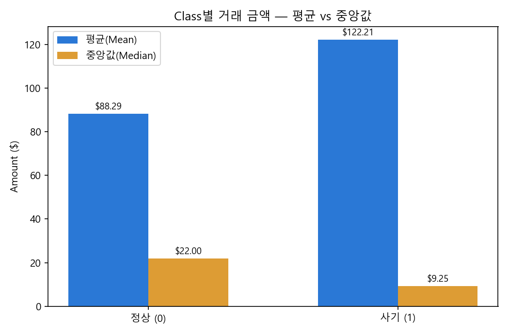
card_df.isna().sum().sum()의 결과는 0이다. 31개 컬럼 전체에서 결측치가 단 한 건도 없다 — Santander(§2.1.2)처럼 -999999 같은 위장된 결측 placeholder가 있는지도 describe()의 min/max 범위를 통해 함께 확인했으나, V1~V28은 PCA 변환값이라 이상하게 튀는 상수형 최솟값이 없었다.
V1~V28은 원본 거래 정보(가맹점, 위치, 카드 종류 등 민감 정보를 포함할 수 있는 항목)를 PCA로 변환한 익명 변수다. PCA 축이므로 이름 자체에는 의미가 없지만, PCA의 정의상 서로 직교(orthogonal)하도록 구성된다는 성질은 보장된다 — 즉 V1~V28 사이에는 구조적으로 완전한 선형 중복이 나타날 수 없다. 이는 Santander의 ind_*/num_*/saldo_* 접두어 체계처럼 사람이 읽을 수 있는 이름 패턴과 대비된다. Time과 Amount만 PCA를 거치지 않은 원본 변수다.
card_df.describe().loc["std",:].unique()의 결과 31개 컬럼 모두 서로 다른 표준편차 값을 가졌다 — 표준편차가 0인(=모든 행이 같은 값인) 컬럼은 하나도 없다. Santander에서 분산 0인 컬럼이 34개나 나온 것(§2.1.5)과 대조적이다. PCA는 정보가 없는(분산이 거의 0에 가까운) 축은 애초에 주성분으로 채택하지 않으므로, 이 데이터셋에서는 구조적으로 무의미한 상수 컬럼이 만들어지지 않는다.
컬럼(변수)을 전치(transpose)한 뒤 duplicated()로 검사한 결과 완전히 동일한 값을 가진 중복 컬럼은 0개다. §3.1.4에서 설명한 PCA의 직교성 덕분에, Santander에서 발견된 29개의 중복 컬럼(§2.1.6)과 같은 문제가 이 데이터셋에는 구조적으로 존재하지 않는다. 다만 §3.1.2에서 언급한 행(row) 단위 중복 1,081건은 컬럼 중복과는 별개의 현상이므로 혼동하지 않아야 한다.
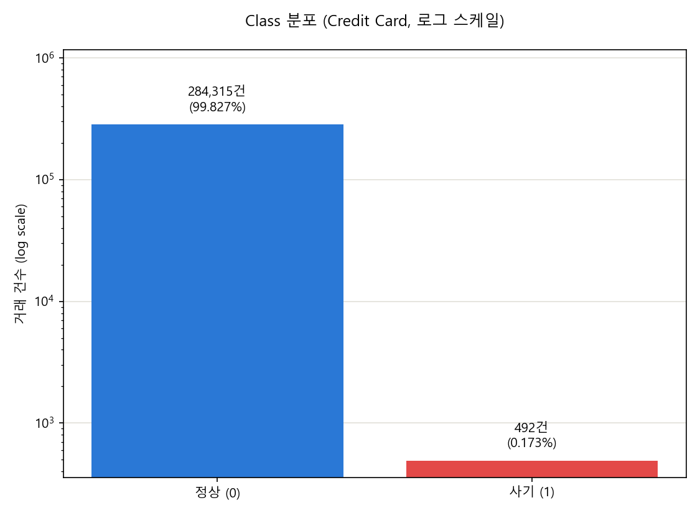
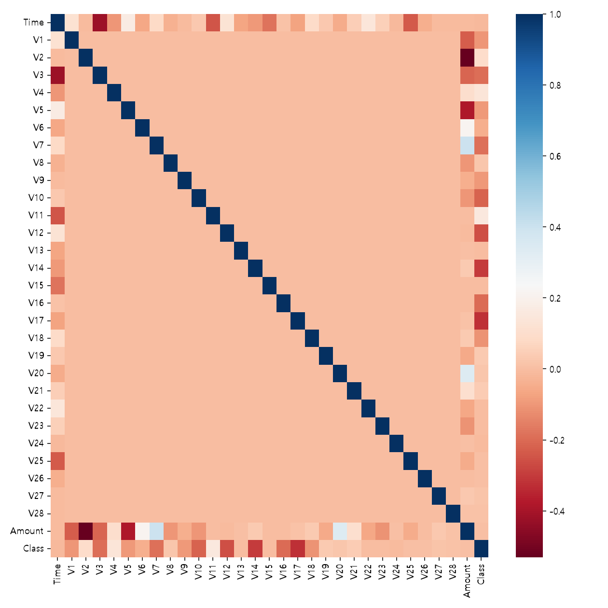
Time은 첫 거래 이후 경과 초이므로, 172,792초(48시간)를 24시간 주기로 환산((Time/3600) % 24)하면 하루 중 어느 시간대에 거래가 몰리는지 볼 수 있다. 코드에는 없는 분석이지만, Time 컬럼이 왜 §3.3에서 제거되는지 근거를 보태기 위해 직접 확인했다.
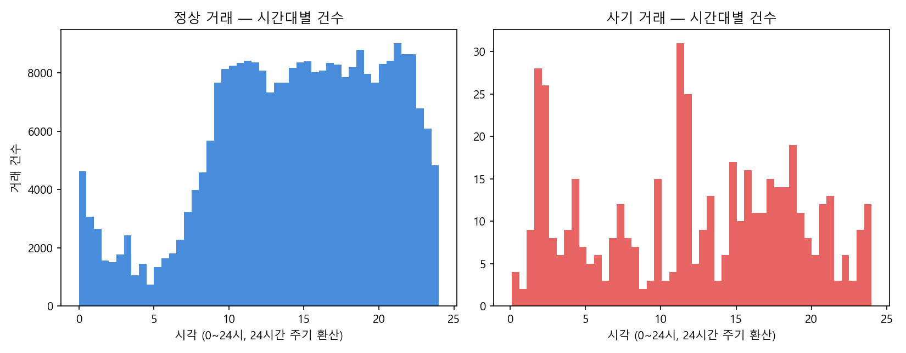
| 지표 | 정의 | 이 데이터에서의 역할 |
|---|---|---|
| Recall(재현율) | 실제 사기 중 모델이 찾아낸 비율 | 최우선 지표 — 놓친 사기는 그대로 금전 손실 |
| Precision(정밀도) | 사기로 예측한 것 중 실제 사기 비율 | 너무 낮으면 정상 거래 차단·고객 불편 급증 |
| F1-Score | 정밀도·재현율의 조화평균 | 재현율만 극단적으로 높이는 것을 견제하는 균형 지표 |
| ROC-AUC | 전체 임곗값에서의 TPR-FPR 트레이드오프 | 모델 판별력 비교(단독으로는 과대평가 위험, §3.1.7) |
| AUPRC | Precision-Recall 곡선의 면적 | 극단적 불균형에서 ROC-AUC를 보완하는 핵심 지표 |
이 다섯 지표는 모두 혼동행렬(Confusion Matrix)에서 계산된다. 이 데이터셋의 맥락으로 혼동행렬의 네 칸을 다시 정리하면 다음과 같다.
| 예측: 정상 | 예측: 사기 | |
|---|---|---|
| 실제: 정상 | TN — 정상을 정상으로. 문제 없음 | FP — 정상을 사기로 오탐. 고객 재확인 비용 |
| 실제: 사기 | FN — 사기를 정상으로. 탐지 실패, 금전 손실 | TP — 사기를 사기로. 탐지 성공 |
Recall = TP / (TP + FN)이므로, 재현율을 높인다는 것은 결국 FN(탐지 실패)을 줄이는 것과 동의어다. 반대로 Precision = TP / (TP + FP)는 FP(오탐)를 줄일수록 올라간다. 두 지표가 동시에 최고가 되는 임곗값은 일반적으로 존재하지 않으므로(§3.6.2에서 실제로 확인), 이 프로젝트에서는 FN을 줄이는 쪽에 가중치를 둔 임곗값을 선택했다.
하이퍼파라미터 튜닝(GridSearchCV)의 기준 지표로는 accuracy 대신 average_precision(AUPRC)를 사용했다 — 이 데이터처럼 양성(사기) 비율이 0.173%뿐인 경우 accuracy는 항상 99.8% 이상으로 나와 모델 간 우열을 가리는 데 도움이 되지 않기 때문이다. 임곗값 조정은 모델 학습이 끝난 뒤 별도 단계로 진행하므로, 튜닝 단계에서는 임곗값에 의존하지 않는 지표(AUPRC)로 샘플링 기법과 모델의 우열을 먼저 가리고, 최종 임곗값은 재현율 목표에 맞춰 §3.6에서 따로 정한다.
| 처리 | 내용 | 근거 |
|---|---|---|
| Time 제거 | 거래 순번성 정보로 사기 여부와 직접 관련 없음 | 노이즈 제거 |
| Amount 로그 변환 | log1p(Amount) → Amount_Scaled 컬럼 추가 | 왜도 16.98 → 0.16로 완화(그림 3-5) |
| V14 이상치 제거 | 사기(Class=1) 데이터의 V14 IQR×1.5 범위 밖 값 제거 | 사기 클래스 내에서 상관관계 상위권 변수의 잡음 축소 |
| train/test 분할 | 7:3, stratify=y | 0.173% 비율을 양쪽 세트에 동일하게 유지 |
def get_preprocessed_df(df):
df_copy = df.copy()
amount_n = np.log1p(df_copy['Amount'])
df_copy.insert(0, 'Amount_Scaled', amount_n)
df_copy.drop(['Time','Amount'], axis=1, inplace=True)
return df_copy
# train_test_split(test_size=0.3, random_state=42, stratify=y_target) 이후,
# train과 test 각각에서 독립적으로 V14 이상치를 제거한다.
| 구분 | 평균 | 표준편차 | 왜도(skew) |
|---|---|---|---|
| 변환 전 (Amount, $) | 88.35 | 250.12 | 16.98 |
| 변환 후 (Amount_Scaled = log1p) | - | - | 0.16 |
왜도(skewness)는 0에 가까울수록 좌우 대칭에 가깝다. 16.98은 정규분포(왜도 0)와 비교할 수 없을 만큼 큰 값이며, 로그 변환만으로 0.16까지 낮아진다는 것은 Amount의 비대칭성이 극소수 고액 거래에 의해 만들어진 것이지 데이터 자체의 근본적인 특성이 아니라는 뜻이다.
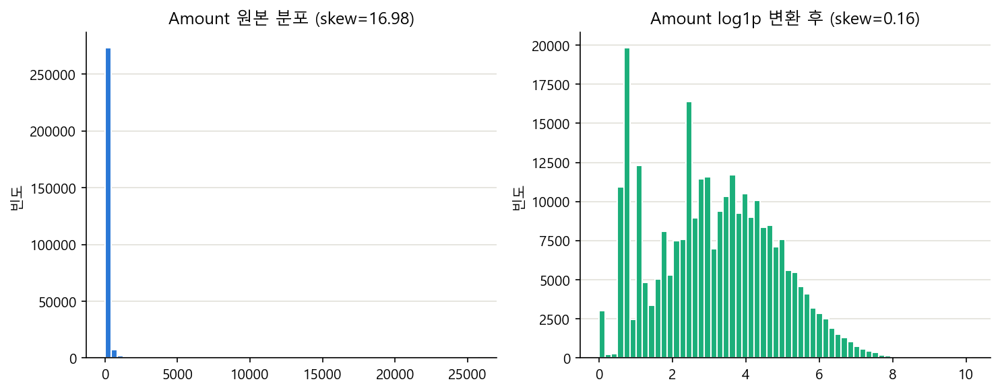
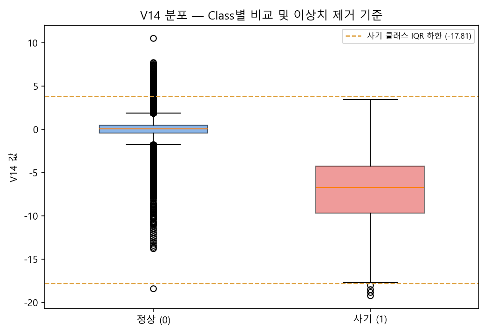
V1~V28은 이미 PCA로 압축된 피처라 Santander(§2.4)나 Mercari(§5.4)처럼 추가 파생 변수를 만들 여지가 크지 않다. 이 노트북에서 유일하게 새로 만든 컬럼은 §3.3의 Amount_Scaled(로그 변환된 Amount)이며, 그 외 범주형 인코딩이나 텍스트 벡터화도 필요 없다 — 31개 컬럼이 모두 이미 수치형이기 때문이다. 이 프로젝트에서 실질적으로 "피처 엔지니어링"에 해당하는 작업은 클래스 불균형을 보정하는 샘플링 전략 선택이며, 이는 모델링과 결합되므로 §3.5에서 함께 다룬다.
대부분의 분류 모델은 학습 과정에서 전체 손실(loss)을 최소화하는 방향으로 학습한다. 사기 비율이 0.173%인 원본 데이터를 그대로 학습하면, 모델이 사기 492건을 모두 틀리게 예측해도 손실 총합에는 거의 영향이 없다 — 정상 284,315건만 잘 맞히면 손실이 이미 충분히 낮기 때문이다. 그 결과 모델은 "사기 패턴을 배우는 것"보다 "다수 클래스를 더 정확히 맞히는 것"에 최적화되기 쉽다. 리샘플링은 학습 단계에서 두 클래스의 비중을 강제로 맞춰, 모델이 사기 패턴 자체를 무시하지 못하게 만드는 장치다.
| 기법 | 방식 | 학습 데이터 변화 |
|---|---|---|
| 언더샘플링 | 정상 거래를 사기 건수만큼 무작위로 축소 | 199,362건 → 684건 (342 / 342) |
| SMOTE | 사기 샘플 주변에 합성 데이터를 생성해 오버샘플링 | 199,362건 → 398,040건 (199,020 / 199,020) |
| SMOTE-ENN | SMOTE 이후 경계가 모호한 샘플을 ENN으로 추가 제거 | 199,362건 → 397,717건 (199,020 / 198,697) |
세 기법 모두 train 데이터에만 적용했다(test는 원본 분포 유지). 세 기법의 순수한 효과 비교는 LightGBM 기본 파라미터로 통일해 진행했으며, 그 결과는 §3.6.4 (1)에서 다룬다. 최종적으로 5개 모델 모두 SMOTE를 채택했다 — 언더샘플링은 정상 거래 정보를 99.7% 가까이 버려 실무 적용이 어렵고(§3.6.4), SMOTE-ENN은 SMOTE 대비 뚜렷한 이점이 크지 않았기 때문이다.
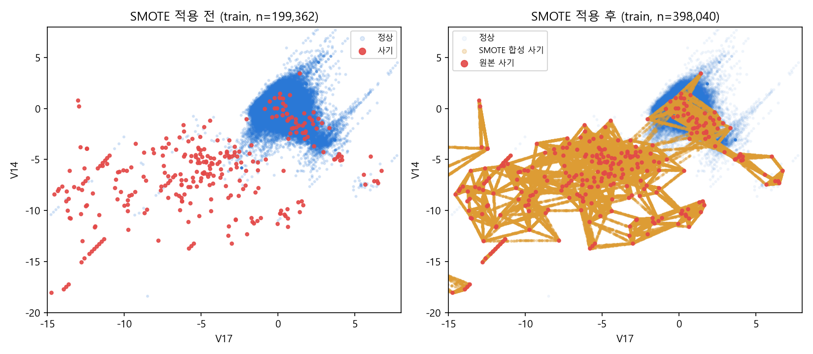
smote_pipeline = ImbPipeline([
('sampler', SMOTE(random_state=42)),
('classifier', LGBMClassifier(n_estimators=1000, n_jobs=1, boost_from_average=False))
])
lgbm_smote_grid = GridSearchCV(smote_pipeline, param_grid={
'classifier__num_leaves': [31, 64], 'classifier__max_depth': [-1, 7],
'classifier__learning_rate': [0.05, 0.1]
}, cv=StratifiedKFold(n_splits=5, shuffle=True, random_state=42), scoring='average_precision', n_jobs=-1)
# Best Params: learning_rate=0.05, max_depth=-1, num_leaves=64
# Best CV AUPRC: 0.8673
| 파라미터 | 조절 대상 | 이 데이터에서의 선택 |
|---|---|---|
| num_leaves | 트리 한 개당 허용 리프(말단) 노드 수. 클수록 더 복잡한 패턴을 학습하지만 과적합 위험도 커진다 | 64(탐색 범위 중 큰 값) 선택 — 사기 패턴이 국소적이라 더 세분화된 분기가 유리했다 |
| max_depth | 트리의 최대 깊이. -1은 깊이 제한 없음을 뜻한다 | -1(무제한) 선택 — num_leaves가 이미 복잡도를 제어하므로 깊이 제한이 추가로 필요 없었다 |
| learning_rate | 각 트리가 이전 트리의 오차를 보정하는 폭. 작을수록 촘촘하게, 느리게 학습한다 | 0.05(탐색 범위 중 작은 값) 선택 — n_estimators=1000과 맞물려 촘촘한 보정이 더 안정적인 AUPRC를 냈다 |
이 GridSearchCV는 LightGBM에 대해서만 수행했다. §3.6.4 (2)에서 비교하는 5개 모델 중 RandomForest(최종 채택)는 n_estimators=1000 외에는 기본 파라미터를 그대로 사용했다 — 기본 설정만으로도 ROC-AUC 0.9854로 5개 모델 중 가장 높았기 때문에, 이 프로젝트에서는 RandomForest의 구조적 하이퍼파라미터를 추가로 탐색하는 대신 분류 임곗값을 재현율 목표에 맞게 조정하는 쪽에 튜닝 자원을 집중했다(§3.6.2). 즉 "모델 내부 파라미터 튜닝"과 "의사결정 임곗값 튜닝"은 서로 다른 층위의 튜닝이며, 이 프로젝트의 최종 성능 개선은 후자에서 나왔다.
동일한 모델을 세 가지 임곗값에서 평가해, 임곗값 조정이 성능에 미치는 영향을 그대로 보여준다.
| 임곗값 | Accuracy | Precision | Recall | F1 | ROC-AUC | AUPRC |
|---|---|---|---|---|---|---|
| 0.500 (기본값) | 0.9994 | 0.8712 | 0.7823 | 0.8244 | 0.9854 | 0.8314 |
| 0.727 (최대 F1 지점) | - | 0.9558 | 0.7347 | 0.8308 | 0.9854 | 0.8314 |
| 0.305 (채택 — 재현율 우선) | 0.9992 | 0.7500 | 0.8367 | 0.7910 | 0.9854 | 0.8314 |
채택 임곗값(0.305) 혼동행렬: TN=85,254 · FP=41 · FN=24 · TP=123 (테스트셋 사기 147건 중 123건 탐지). ROC-AUC와 AUPRC는 임곗값에 무관한 확률 기반 지표라 세 행에서 값이 동일하다.
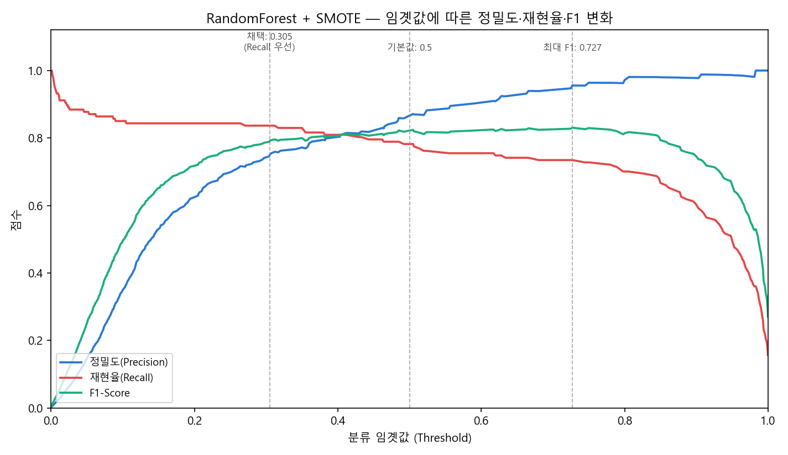
이 조정의 대가는 정밀도다. 정밀도는 0.9558(임곗값 0.727)에서 0.7500(임곗값 0.305)으로 떨어진다 — 사기로 예측한 거래 4건 중 1건은 실제로는 정상 거래라는 뜻이다. 다만 §3.2에서 정의한 대로 오탐지의 비용(고객 재확인 연락)은 탐지 실패의 비용(금전 손실)보다 훨씬 작다고 보았으므로, 이 트레이드오프는 이 프로젝트의 목적에 부합한다.
ROC-AUC(0.9854)만 보면 매우 높아 보이지만, AUPRC(0.8314)는 상대적으로 낮다 — 이는 §3.1.7에서 설명한 대로 극단적 불균형에서 ROC-AUC가 실제보다 낙관적으로 보이는 현상을 보여주는 구체적 사례다. 이 데이터셋에서는 AUPRC가 ROC-AUC보다 모델 성능을 더 보수적이고 현실적으로 보여준다.
세 개의 관점 — 샘플링 기법, 모델 종류, 임곗값 — 을 각각 독립적으로 비교해, 최종 채택안(RandomForest + SMOTE + 임곗값 0.305)이 세 관점 모두에서 근거를 갖췄는지 확인한다.
LightGBM 기본 파라미터(튜닝 전)로 통일해 세 기법만 바꿔 비교했다. 최종 채택 모델(RandomForest)이 아니라 LightGBM을 측정 도구로 고정해야 "샘플링 기법 자체의 순수한 효과"만 비교할 수 있기 때문이다.
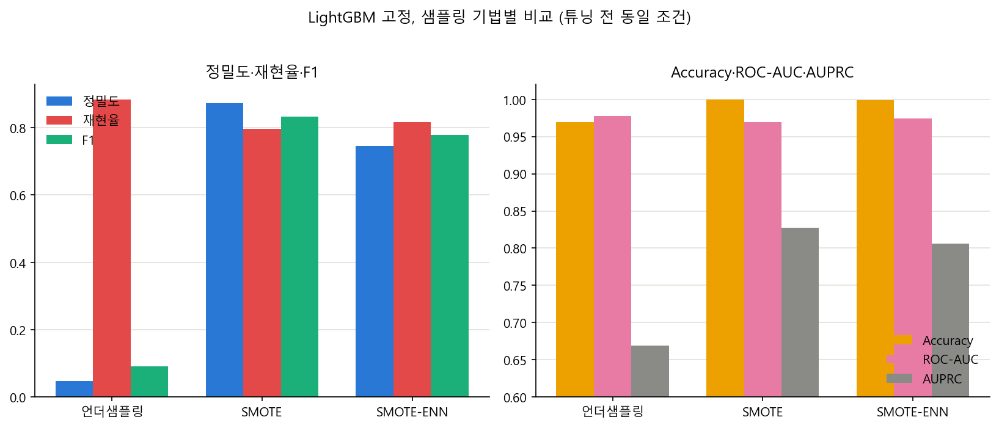
| 샘플링 | Accuracy | Precision | Recall | F1 | AUC | AUPRC |
|---|---|---|---|---|---|---|
| 언더샘플링 | 0.9695 | 0.0478 | 0.8844 | 0.0906 | 0.9777 | 0.6689 |
| SMOTE | 0.9994 | 0.8731 | 0.7959 | 0.8327 | 0.9697 | 0.8274 |
| SMOTE-ENN | 0.9992 | 0.7453 | 0.8163 | 0.7792 | 0.9739 | 0.8059 |
total_result.xlsx 기준, 담당자 염윤호가 SMOTE 적용 조건에서 시도한 5개 모델이다.
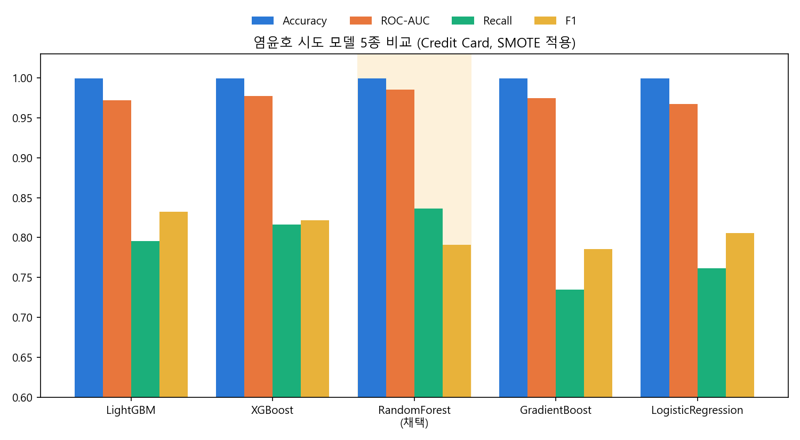
| 모델 | Accuracy | Precision | Recall | F1 | ROC-AUC | 비고 |
|---|---|---|---|---|---|---|
| LightGBM | 0.9994 | 0.8731 | 0.7959 | 0.8327 | 0.9720 | GridSearchCV 튜닝 |
| XGBoost | 0.9993 | 0.8276 | 0.8163 | 0.8219 | 0.9771 | 기본 파라미터 |
| RandomForest (채택) | 0.9992 | 0.7500 | 0.8367 | 0.7910 | 0.9854 | 임곗값 0.305 조정 |
| GradientBoost | 0.9993 | 0.8438 | 0.7347 | 0.7855 | 0.9749 | 임곗값 0.9844 조정 |
| LogisticRegression | 0.9994 | 0.8550 | 0.7619 | 0.8057 | 0.9675 | 임곗값 최적화 |
§3.1.7에서 밝힌 대로 이 데이터셋에서는 ROC-AUC가 실제보다 낙관적으로 보일 수 있어, AUPRC(정밀도-재현율 곡선의 면적) 기준으로도 5개 모델을 다시 확인했다.
| 모델 | ROC-AUC | AUPRC | 두 지표의 순위가 같은가 |
|---|---|---|---|
| LightGBM | 0.9720 | 0.8342 | 아니오 (AUPRC 1위) |
| XGBoost | 0.9771 | 0.8350 | 아니오 (AUPRC 공동 1위) |
| RandomForest (채택) | 0.9854 | 0.8314 | 아니오 (ROC-AUC 1위, AUPRC 3위) |
| GradientBoost | 0.9749 | 0.6687 | 예 (둘 다 하위권) |
| LogisticRegression | 0.9675 | 0.7024 | 예 (둘 다 최하위) |
51개 텍스트 파일 각각은 특정 상품·서비스의 한 측면(aspect)에 대한 리뷰 문장 모음이다 (예: battery-life_ipod_nano_8gb, rooms_swissotel_chicago). 사전 레이블이 없는 비지도 학습 문제이며, 목적은 비슷한 리뷰 문서끼리 자동으로 묶어 상품군별 특징을 파악하는 것이다. 담당 방법은 TF-IDF/Count 벡터화 + K-means/DBSCAN 군집화이며, 부가적으로 VADER 감성 분석을 결합했다.
각 문서는 filename과 파일 내 모든 문장을 이어 붙인 opinion_text 컬럼으로 구성된다. 파일명은 {주제(aspect)}_{대상(product)} 구조를 따른다 — 예를 들어 battery-life_amazon_kindle은 "아마존 킨들의 배터리 수명"에 대한 리뷰다. 이 구조를 활용해 대상(product)을 3개 상품군(전자기기·자동차·호텔)으로 매핑한 대리 정답(proxy label)을 만들어 §4.5 외부 평가에 사용했다.
51개 파일 모두 정상적으로 로드되어 결측치 개념이 해당하지 않는다. 대리 정답 기준으로 집계하면 전자기기 25건, 호텔 16건, 자동차 10건이며, 더 세부적인 주제(aspect) 기준으로는 고유 35개 카테고리가 존재한다(예: battery-life, screen, room, mileage 등).
이 데이터셋에는 "동일 값 컬럼"이나 "중복 컬럼" 개념이 없는 대신, 같은 대상을 가리키지만 파일명 표기가 다른 사례가 있었다 — netbook_1005ha와 asus_netbook_1005ha, swissotel_chicago와 swissotel_hotel_chicago가 각각 동일 대상이다. 대리 정답을 만들 때 이 표기를 통일해 정답의 정확도를 보장했다.
| 지표 | 정의 | 이 데이터에서의 역할 |
|---|---|---|
| 실루엣 점수 | 같은 군집 내 응집도 대비 다른 군집과의 분리도(-1~1) | 정답 없이 군집 품질 자체를 평가하는 1차 지표 |
| ARI / NMI | 군집 결과와 대리 정답(상품군) 간 일치도 | 실루엣만으로 판단하기 어려운 실제 의미 있는 분리 여부 검증 |
| 군집 안정성 | 서로 다른 random seed로 반복한 군집 결과 간 평균 ARI | 결과가 운(seed)에 좌우되지 않는지 확인 |
lemmar = WordNetLemmatizer()
def LemNormalize(text):
return LemTokens(nltk.word_tokenize(text.lower().translate(remove_punct_dict)))
tfidf_vect = TfidfVectorizer(tokenizer=LemNormalize, stop_words='english',
ngram_range=(1,2), min_df=0.05, max_df=0.85)
count_vect = CountVectorizer(tokenizer=LemNormalize, stop_words='english',
ngram_range=(1,2), min_df=0.05, max_df=0.85)
표제어 추출(lemmatization)로 running/runs/ran → run 같은 활용형을 통일하고, 영어 불용어를 제거한 뒤 1~2gram으로 벡터화했다. min_df=0.05는 51개 문서 중 최소 3개(5%) 미만에서만 등장하는 희귀 단어를 제외해 노이즈를 줄이고, max_df=0.85는 85% 이상 문서에 공통으로 등장하는 단어(사실상 불용어에 가까운 범용 단어)를 추가로 걸러낸다.
벡터화 방식(TF-IDF, Count, Count+L2정규화) × 군집화 알고리즘(K-means, DBSCAN) 조합 5가지를 동일한 k=3(K-means) 기준으로 비교했다. DBSCAN은 군집 수를 직접 지정할 수 없으므로, 대신 eps 파라미터를 코사인 거리 5~55 백분위수 구간에서 탐색해 실루엣 점수가 가장 높은 값을 자동 선택했다 (TF-IDF eps=0.7199, Count eps=0.7983).
| 조합 | 군집 수 | 노이즈 비율 | 실루엣 점수 |
|---|---|---|---|
| TF-IDF + KMeans | 3 | 0.000 | 0.0573 |
| Count + KMeans | 3 | 0.000 | 0.5489 |
| Count(정규화) + KMeans | 3 | 0.000 | 0.0625 |
| TF-IDF + DBSCAN | 4 | 0.275 | 0.1249 |
| Count + DBSCAN | 2 | 0.118 | 0.2194 |
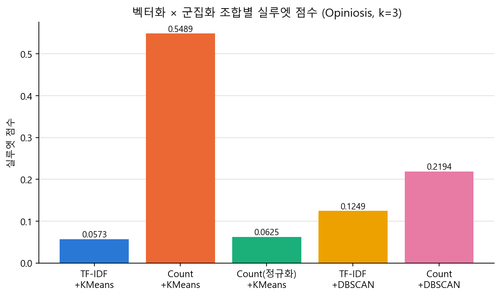
DBSCAN은 두 벡터화 방식 모두에서 K-means보다 실루엣 점수가 낮고, 노이즈로 분류되는 문서 비율도 11.8~27.5%에 달했다. DBSCAN은 밀도가 일정하지 않으면 군집을 놓치기 쉬운데, 51개 문서·상품군별 문서 수 불균형(전자기기 25 vs 자동차 10)이 있는 이 데이터에는 K-means가 더 안정적으로 맞았다.
TF-IDF 벡터에 TruncatedSVD를 적용하는 것이 실제로 군집 품질을 개선하는지 검증했다. 서로 다른 차원 공간의 실루엣 점수는 직접 비교할 수 없으므로(고차원일수록 거리가 집중돼 실루엣이 구조적으로 낮게 나옴), 대리 정답 기반 외부 평가(ARI/NMI)를 사용했고, random seed 30개로 반복해 군집 안정성도 함께 측정했다.
| 파이프라인 | ARI(대상종류) | NMI(대상종류) | ARI(주제) | NMI(주제) | 안정성 |
|---|---|---|---|---|---|
| A. TF-IDF (baseline) | 0.9966 | 0.9954 | 0.0456 | 0.4362 | 0.9932 |
| B. SVD(n_components=5) | 1.0000 | 1.0000 | 0.0455 | 0.4359 | 1.0000 |
| B. SVD(n_components=10) | 0.9219 | 0.9494 | 0.0445 | 0.4336 | 0.8609 |
| B. SVD(n_components=20) | 0.9682 | 0.9716 | 0.0463 | 0.4378 | 0.9379 |
| B. SVD(n_components=40) | 0.9913 | 0.9892 | 0.0455 | 0.4360 | 0.9827 |
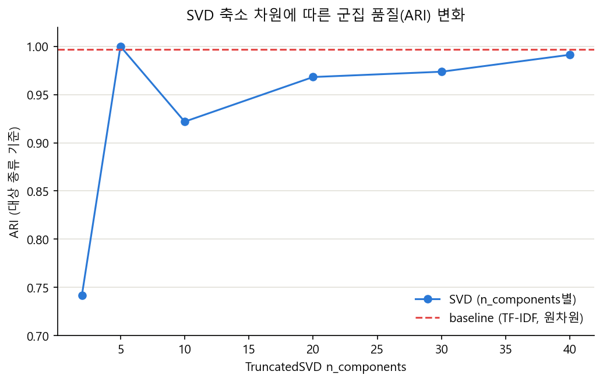
참고로 문서 51개에 대해 TruncatedSVD 상위 40개 축의 누적 설명분산비는 n=10에서 45.2%, n=20에서 71.8%, n=40에서 97.7%였다 — n_components 상한을 40 부근으로 잡은 근거다.
각 군집에서 중심점(centroid)에 가장 가까운 상위 10개 단어를 뽑아, 실제로 상품군을 반영하는지 확인했다.
| 파이프라인 | Cluster 0 | Cluster 1 | Cluster 2 |
|---|---|---|---|
| A. baseline(TF-IDF) | mileage, kindle, page, gas, button, gas mileage, font, performance, book, eye | room, hotel, service, staff, interior, food, location, seat, comfortable, bathroom | screen, battery, battery life, life, keyboard, video, direction, voice, map, feature |
| B. SVD(n=5) | screen, battery, keyboard, size, direction, voice, map, battery life, display, speed | interior, seat, mileage, comfortable, gas, gas mileage, performance, comfort, car, ride | room, service, hotel, staff, location, food, clean, room service, price, service wa |
문서 단위로 감성 점수를 내면 문장 수 차이 때문에 극단적으로 쏠릴 수 있어, 원본 문장 단위로 VADER 감성 점수를 계산한 뒤 문서(파일)별 긍정/중립/부정 비율로 다시 집계했다.
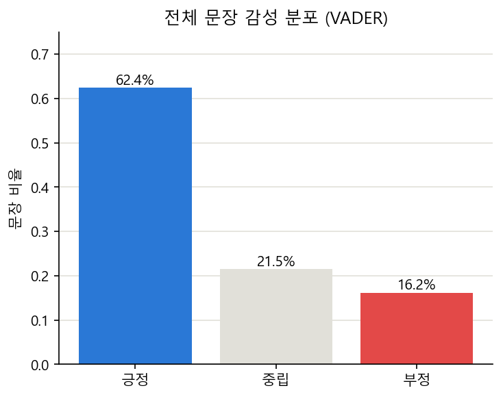
상품명·설명·브랜드·카테고리·상태·배송 여부가 주어졌을 때 판매 가격(price)을 예측하는 회귀 문제다. 목표 변수가 연속적인 실수값이라 분류가 아닌 회귀로 정의된다. 담당 모델은 LinearRegression이며, Ridge·Lasso·RandomForest·XGBoost와 비교했다.
| # | 컬럼명 | 설명 | 타입 |
|---|---|---|---|
| 1 | name | 상품명(텍스트) | Text |
| 2 | item_condition_id | 상품 상태 — 1(최상)~5(최하) | Ordinal |
| 3 | category_name | 대/중/소 분류가 "/"로 결합 | Text/Cat |
| 4 | brand_name | 브랜드명 — 결측 다수 | Categorical |
| 5 | shipping | 배송비 부담 주체 — 1:판매자, 0:구매자 | Binary |
| 6 | item_description | 상품 상세 설명(텍스트) | Text |
| - | price | 예측 대상 종속변수(달러) | Target |
shipping은 구매자 부담(0) 819,435건, 판매자 부담(1) 663,100건으로 비교적 균형 잡혀 있다. item_condition_id는 1(최상) 640,549건이 가장 많고 5(최하)는 2,384건에 불과해, 대부분 상태가 양호한 중고품이다.
| 컬럼 | 결측치 건수 | 비율 | 처리 필요성 |
|---|---|---|---|
| category_name | 6,327 | 0.43% | 낮음 |
| brand_name | 632,682 | 42.67% | 매우 높음 |
| item_description | 6 | <0.01% | 무시 가능 |
참고: item_description에는 실제 결측(NaN)은 6건뿐이지만, "No description yet"이라는 placeholder 문자열이 82,489건 있다 — 형식적으로는 결측이 아니지만 실질적으로는 정보가 없는 값이다.
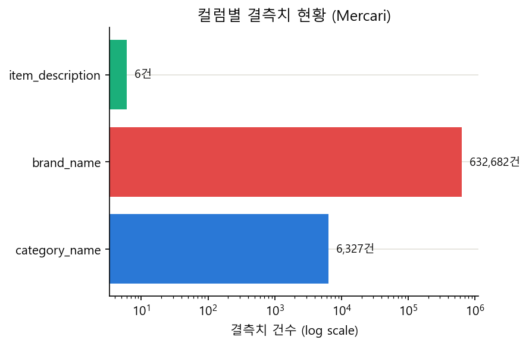
category_name은 Women/Tops/T-shirts처럼 대/중/소 분류가 "/"로 묶여 있다. 대분류만도 11종(Women 664,385 / Beauty 207,828 / Kids 171,689 / Electronics 122,690 / Men 93,680 / Home 67,871 / Vintage & Collectibles 46,530 / Other 45,351 / Handmade 30,842 / Sports & Outdoors 25,342 / Other_Null 6,327)이며, 중분류 114종·소분류 871종으로 계층이 깊다.
원본 8개 컬럼은 각각 서로 다른 정보를 담고 있어 분산 0이거나 완전 중복인 컬럼은 없다. 다만 category_name과 파생 컬럼 cat_so(소분류, 871종)는 cat_dae·cat_jung과 계층적으로 겹치는 정보가 많아, 선형 모델의 계수 추정이 불안정해지지 않도록 cat_so는 최종 피처에서 제외했다(§5.4).
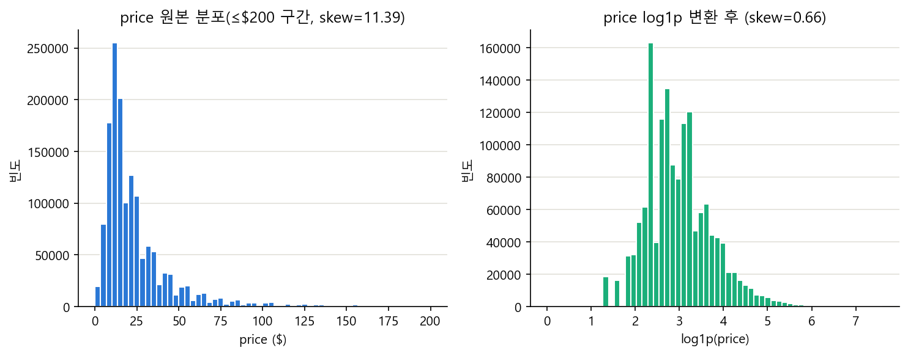
RMSLE를 선택한 이유는 두 가지다. 첫째, 절대 오차가 아닌 비율 오차를 평가한다 — $10짜리 상품을 $20으로 예측한 오차(2배)와 $100짜리 상품을 $110으로 예측한 오차(1.1배)는 절대 오차가 똑같이 $10이지만, RMSLE는 전자를 훨씬 크게 벌점을 준다. 저가 상품이 많은 이 데이터셋에서는 이 비율 감각이 훨씬 중요하다. 둘째, 실제보다 낮게 예측했을 때 더 큰 벌점을 준다 — 예를 들어 실제 $100인 상품을 $50으로 예측하면 RMSLE 기여분이 약 0.69이지만, $150으로 예측하면 약 0.40에 그친다(동일한 $50 오차인데도).
학습은 log1p(price) 기준으로 진행하고, 평가할 때는 expm1로 원래 달러 단위로 복원한 뒤 RMSLE를 계산한다. 이렇게 해야 "학습 목표"와 "최종 평가 지표"가 같은 로그 공간에서 일관되게 유지된다.
| 대상 | 처리 |
|---|---|
| price | log1p(price) 변환 후 학습에 사용 |
| category_name | "/" 기준으로 cat_dae/cat_jung/cat_so 3단 분할 |
| brand_name | 결측치 보완(아래) 후 나머지는 "Other_Null"로 채움 |
| item_description | 결측 6건을 "Other_Null"로 채움 |
known_brands = set(mercari_df.loc[mercari_df['brand_name'].notnull(), 'brand_name'].unique())
def find_brand_in_name(name, brand_set):
words = str(name).split()
for size in (3, 2, 1): # 긴 조합부터 우선 매칭 (예: "Kate Spade" > "Kate")
for i in range(len(words) - size + 1):
candidate = ' '.join(words[i:i+size])
if candidate in brand_set:
return candidate
return None
# 브랜드 결측(보완 전): 632,682건 → name에서 역추론으로 채운 행: 148,714건
# 역추론 후에도 남은 결측(Other_Null로 채워질 행): 483,968건
name은 평균 길이가 짧아 단어 등장 빈도로 변별하기 어려우므로 단순 등장 횟수(CountVectorizer)를 사용했다. item_description은 문서 전반에 공통적으로 쓰이는 단어가 많아, 핵심 단어에 가중치를 주는 TF-IDF를 사용했다. 범주형 변수(brand_name, item_condition_id, shipping, cat_dae, cat_jung)는 LabelBinarizer(sparse_output=True)로 희소 원-핫 인코딩했다 — 브랜드처럼 종류가 많은 변수를 밀집(dense) 배열로 만들면 메모리가 급격히 늘어나기 때문이다.
| 모델 | 조건 | RMSLE |
|---|---|---|
| LinearRegression (채택) | item_description 포함 | 0.4818 |
| LinearRegression | item_description 제외 | 0.5154 |
| Ridge | alpha=5 (5개 값 중 최선) | 0.4792 |
| Lasso | alpha=0.01 (5개 값 중 최선) | 0.6924 |
| RandomForest | n_estimators=100, max_depth=15 | 0.7063 |
| XGBoost | n_estimators=200, max_depth=6, 40만 행 서브샘플 | 0.5251 |
Ridge·Lasso·RandomForest·XGBoost에 대해 20만 행 샘플로 Optuna 탐색을 수행한 뒤, 찾은 최적 하이퍼파라미터로 전체 데이터를 재학습해 최종 RMSLE를 산출했다(모델 간 공정한 비교를 위해 최종 비교는 항상 전체 데이터 기준).
| 모델 | 탐색 파라미터 | 전체 재학습 RMSLE |
|---|---|---|
| Ridge | alpha≈5.59 | 0.4792 |
| Lasso | alpha≈0.0001 | 0.5439 |
| RandomForest | n_estimators=124, max_depth=10, min_samples_leaf=1 | 0.7202 |
| XGBoost | 탐색된 파라미터, 40만 행 서브샘플 재학습 | 0.5251 |
RandomForest는 Optuna 튜닝 후에도(0.7202) 기본 설정(0.7063)보다 오히려 나빠졌다. 탐색 공간을 n_estimators 50~150, max_depth 6~14로 계산 비용 때문에 좁게 제한한 탓에, 이 고차원 희소 데이터에 필요한 트리 깊이·개수를 충분히 탐색하지 못한 것으로 판단한다. 즉 탐색 범위 자체가 병목이 될 수 있다는 사례다.
| 순위 | 모델 | 조건 | RMSLE |
|---|---|---|---|
| 1 | Ridge | alpha=5.59(Optuna) | 0.4792 |
| 2 | LinearRegression (채택) | 튜닝 없음(정규화 파라미터 없음) | 0.4818 |
| 3 | XGBoost | Optuna, 40만 행 서브샘플 | 0.5251 |
| 4 | Lasso | alpha≈0.0001(Optuna) | 0.5439 |
| 5 | RandomForest | Optuna | 0.7202 |
§5.5의 item_description 유무 비교(0.4818 vs 0.5154)에서 보듯, 텍스트 정보가 RMSLE를 약 0.033 개선한다 — 위와 같은 근사로 환산하면 예측 오차 범위가 약 3.4%p 정도 좁아지는 효과다. 텍스트가 담긴 상품 설명이 정량적으로도 가격 예측에 기여한다는 근거다.
RMSLE는 "오차가 얼마나 큰가"만 말해준다. 어떤 단어·카테고리가 실제로 가격을 끌어올리는지를 보려면 회귀계수를 직접 확인해야 한다. 다만 LinearRegression은 44,941차원 희소 피처 공간에서 정규화가 없어 개별 계수가 불안정하게 흔들릴 수 있으므로(§5.6.4에서 Ridge가 근소하게 더 우수한 이유와 같은 맥락), §5.6.2와 동일한 피처 조합·분할로 재학습한 Ridge(alpha=5) 계수를 안정적인 대리 지표로 사용했다. 두 모델의 RMSLE 차이가 0.0026에 불과해(0.4818 vs 0.4792), Ridge 계수가 가리키는 방향은 LinearRegression이 학습한 관계와 사실상 같다고 볼 수 있다.
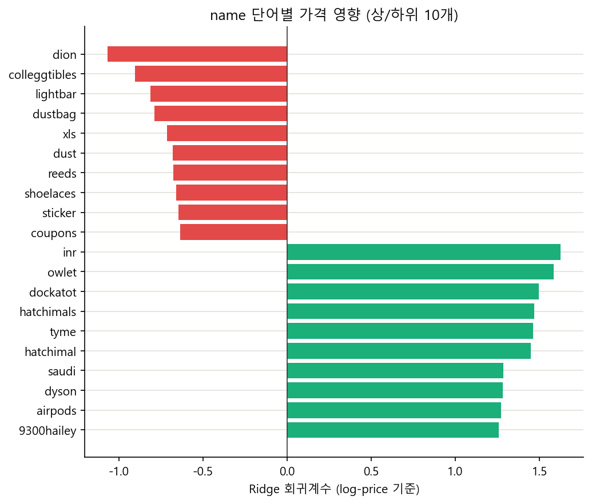
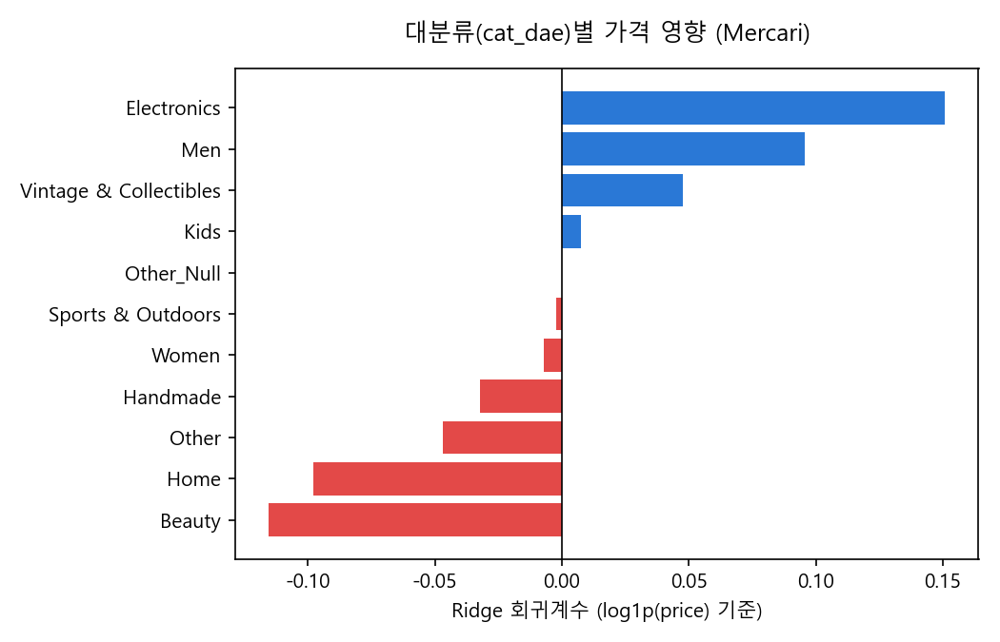
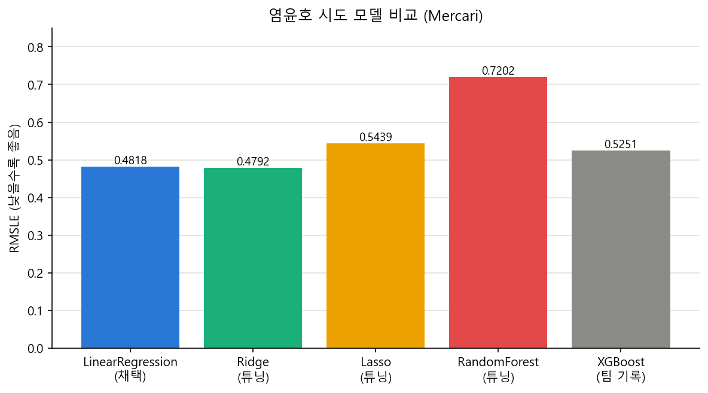
팀원 비교 — total_result.xlsx 기준, 다른 담당자가 같은 데이터셋에서 얻은 결과다.
| 담당자 | 모델 | RMSLE | 비고 |
|---|---|---|---|
| 안성준 | LightGBM | 0.4562 | 하이퍼옵트 적용 |
| 안성준 | Ridge | 0.4576 | - |
| 안성준 | XGBoost | 0.4822 | 하이퍼옵트 적용 |
| 염윤호(본인) | LinearRegression(채택) | 0.4818 | - |
| 염윤호(본인) | Ridge | 0.4791 | Optuna |